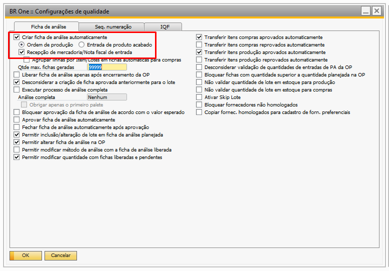
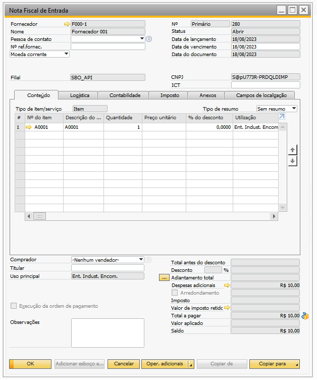
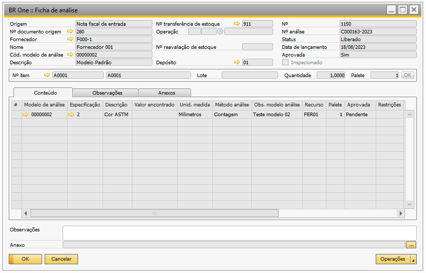
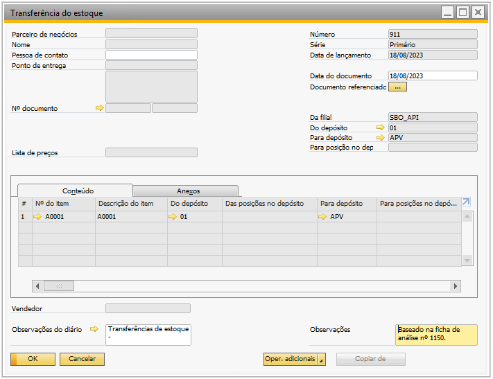
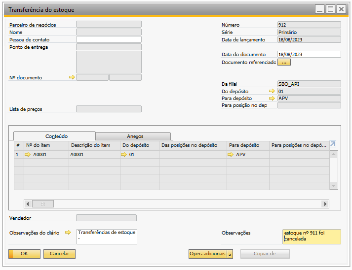
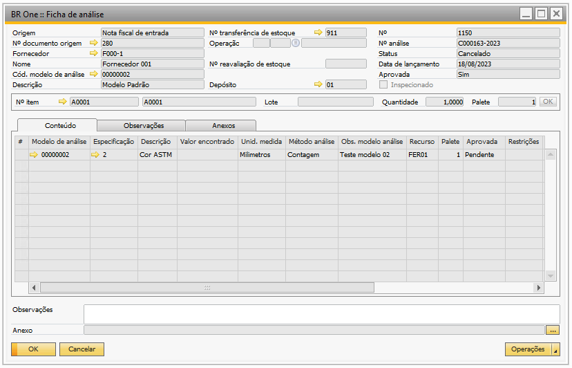
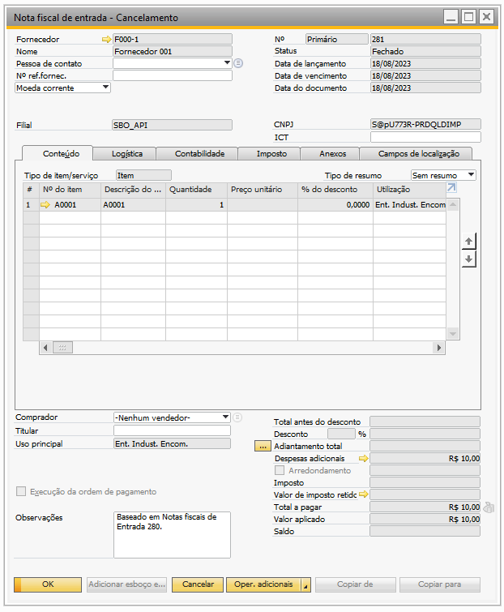
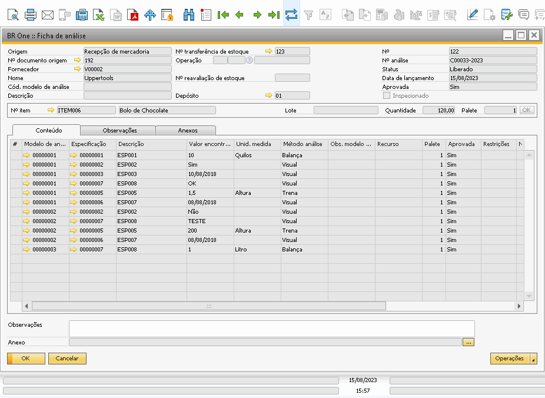

Cancelamento do documento de origem da ficha de análise - Compra
O cancelamento automático da ‘Ficha de análise’, ocorre quando o documento base que originou a ficha é cancelado, assim, o ad-don realiza todas as validações e cancela a ficha de análise e todos os documentos originados a partir dela.
Afim de ilustração, segue abaixo exemplo do comportamento do ad-don, no cancelamento automático da ficha de análise com origem de documento de compra, levando em consideração as configurações de qualidade abaixo, temos:
{kind=link}
Exemplo
Foi adicionada a ‘NF de Entrada’ de nº 280, a mesma possui o item A0001 que por sua vez possui um modelo de análise, com isso na adição deste documento, o ad-don criou automaticamente a ficha de análise nº 1150, que foi liberada e aprovada, gerando assim uma transferência de estoque de nº 911.
  {kind=link}
{kind=link}
{kind=link}
Ao realizar o cancelamento da ‘NF de Entrada’ de nº 280, o ad-don irá realizar as validações e realizará o cancelamento de todos os documentos originados deste documento, neste caso, os documentos originados são a ficha de análise de nº 1150 e a transferência de estoque de nº 911.
  {kind=link}
{kind=link}
{kind=link}
Este comportamento é semelhante para quando a ficha de análise é gerada através do ‘Recebimento de mercadorias’, portanto, o ad-don irá realizar as validações e irá cancelar todos os documentos originários do recebimento cancelado.
Segue abaixo um demonstração do cancelamento de um documento de origem de compra:
{kind=link}